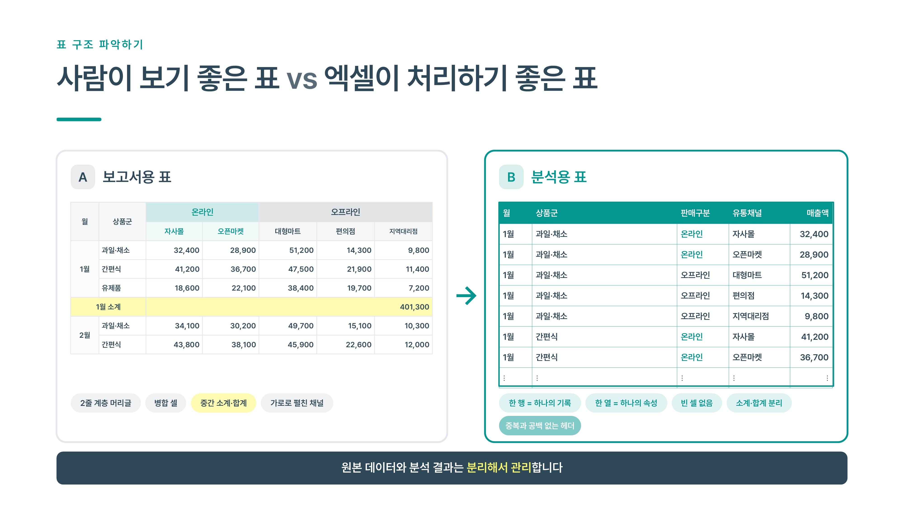
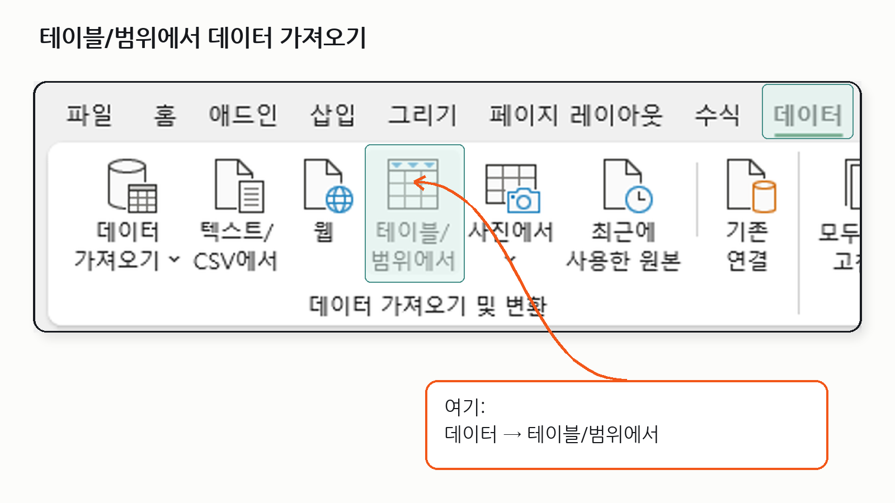
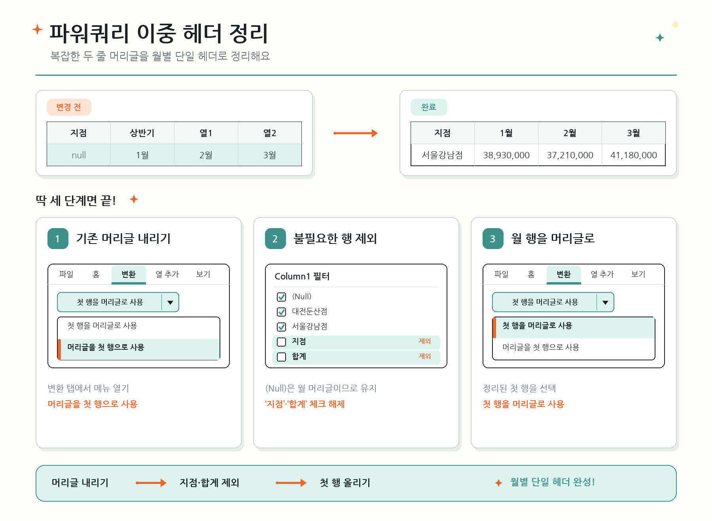
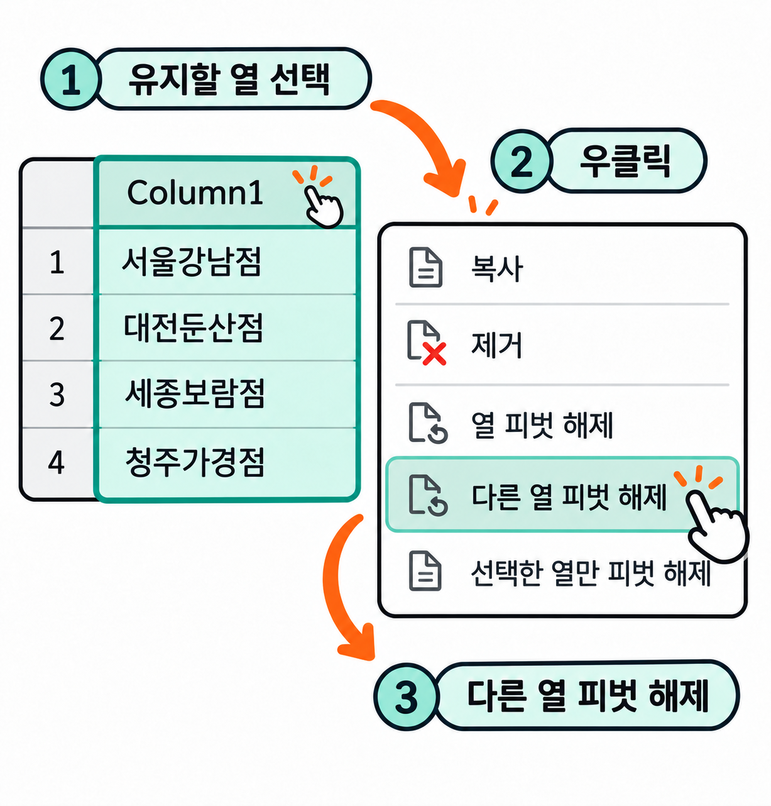
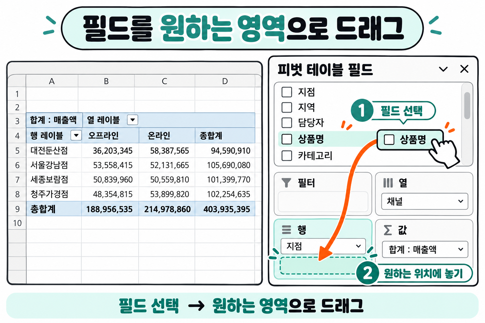
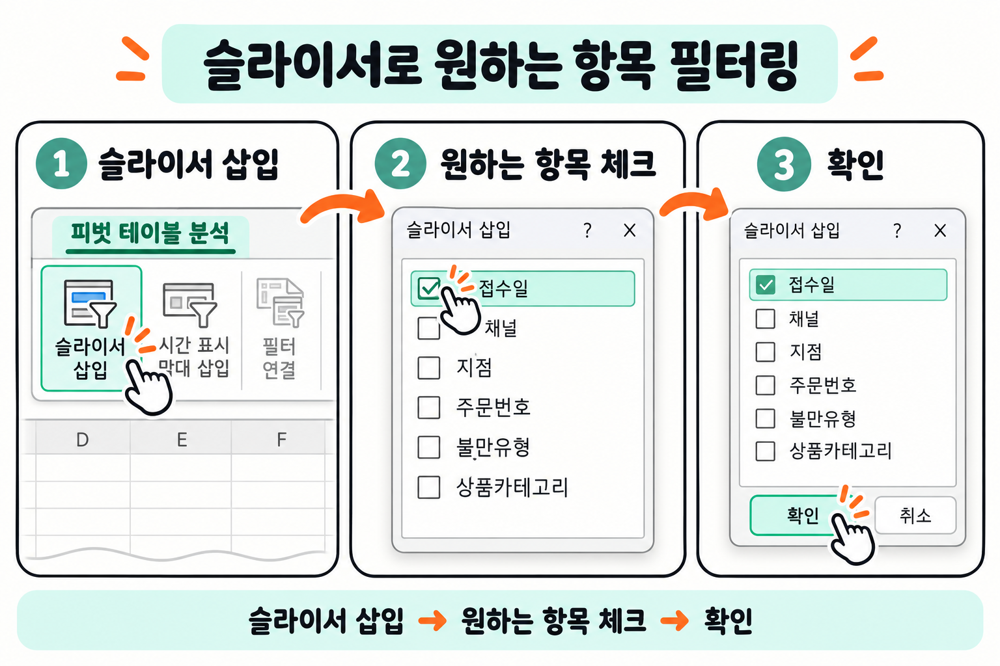
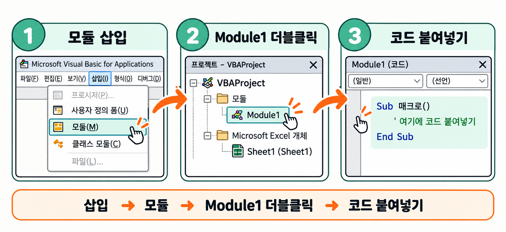
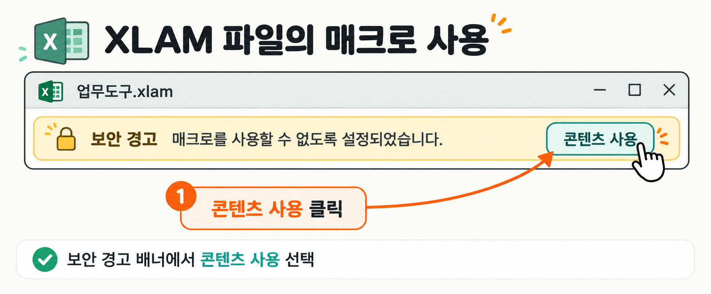

실습형 교안 · 세종연구원 AI아카데미 · 과정 1
엑셀도 AI도 좋아하는 표를 만들고,
막히면 AI에게 물어 해결합니다
보고서형 표를 분석용 표로 바꾸는 법부터, 어질러진 데이터 정리, 피벗테이블, 수식 해독·작성, 매크로까지 이틀 동안 직접 만들고 확인합니다.
학습 목표
이틀이 끝나면 할 수 있는 것
1일차 — 데이터, 제대로 만들고 깔끔하게 다루기
- 보고서형 표와 분석용 표를 구별하고, 분석용 표 5규칙에 맞춰 데이터를 정리할 수 있다
- AI를 활용해 뒤섞인 표기를 통일하고, 숨은 오류를 찾아 전처리할 수 있다
- 피벗테이블로 데이터를 집계·분석하고, AI에게 분석 아이디어를 제안받을 수 있다
- 중첩 수식을 AI에게 설명받아 이해하고, 좋은 질문 4요소로 수식을 직접 작성할 수 있다
2일차 — 분석해서 보고하고, 반복 업무는 넘기기
- 피벗테이블로 데이터에서 원인을 찾아내는 미션을 자가 채점으로 수행할 수 있다
- 차트 3종과 슬라이서를 연동해 한눈에 보이는 대시보드를 만들 수 있다
- 매크로 기록기와 AI 요청으로 반복 작업을 자동화하는 매크로를 만들 수 있다
- 내 업무에 맞는 매크로를 기획하고, 오류가 나면 AI에게 되물어 해결할 수 있다
오늘의 약속
고객 실명·연락처처럼 개인정보가 들어간 원본은 AI에 붙여넣지 않습니다. 고유값이나 머리글만으로 충분합니다. 모든 실습 데이터는 가상 회사 ㈜다온유통을 배경으로 만든 연습용입니다.
데이터, 제대로 만들고 깔끔하게 다루기
1일차 실습에 필요한 파일을 한꺼번에 내려받으세요.
엑셀도 AI도 좋아하는 데이터 모양
오늘 첫 시간은 분석이 아니라 표의 모양을 봅니다.
같은 숫자라도 표가 어떻게 생겼는지에 따라 AI도, 피벗도, 함수도 알아듣거나 못 알아듣습니다.
환경 세팅
환경 세팅
Step 1내 엑셀 버전을 확인합니다.
메뉴에서 파일 → 계정 → Excel 정보 순서로 들어가면 버전이 보입니다.
2016/2019면 이 과정의 몇몇 최신 함수(UNIQUE 등)가 없습니다 — 괜찮습니다, 대안을 함께 안내합니다.
Step 2대화형 AI 서비스에 로그인합니다.
ChatGPT, Claude, Gemini 중 쓰기 편한 것 하나면 충분합니다. 무료 버전으로도 오늘 실습은 모두 가능합니다.
표 구조 파악하기
사람이 보기 좋은 표 vs 엑셀이 처리하기 좋은 표
같은 데이터라도 표의 모양에 따라 엑셀·AI·피벗이 알아듣기도 하고, 못 알아듣기도 합니다.
두 가지 표를 나란히 놓고 차이를 직접 확인합니다.

1.1보고서용 표 — 사람 눈에는 편하지만
왼쪽 A 보고서용 표는 회의나 이메일에 넣으면 읽기 편합니다. 하지만 엑셀의 분석 기능에는 걸림돌이 됩니다.
- 2줄 계층 머리글
- 병합 셀
- 중간 소계·합계
- 가로로 펼친 채널
이런 특징이 하나라도 있으면 피벗테이블이 범위를 제대로 잡지 못하고, AI에게 붙여넣어도 머리글을 엉뚱하게 해석할 수 있습니다.
1.2분석용 표 — 엑셀·AI·피벗이 좋아하는 모양
오른쪽 B 분석용 표는 단순하지만, 이 모양이어야 정렬·필터·피벗·함수·AI 질문이 모두 한 번에 동작합니다.
- 한 행 = 하나의 기록
- 한 열 = 하나의 속성
- 빈 셀 없음
- 소계·합계 분리
- 중복과 공백 없는 헤더
기억할 한 줄
원본 데이터와 분석 결과는 분리해서 관리합니다. 보고서용 표는 최종 산출물이고, 분석용 표가 원본입니다.
1.3내 파일은 어느 쪽인지 확인하기
01_매출_보고서형.xlsx와 02_매출_분석용.xlsx를 각각 열어, 위 그림의 A·B 특징이 맞는지 직접 비교해 봅니다.
할 일 2
분석용 표 5규칙과 내 파일 진단표
AI와 피벗이 알아듣는 표의 조건 5가지를 외우지 말고 체크리스트로 씁니다.
보고서형 표가 왜 안 되는지, 5규칙에 하나씩 대조해 보면 바로 보입니다.
| # | 규칙 | 01_매출_보고서형.xlsx는? |
|---|---|---|
| 1 | 머리글은 한 줄, 맨 위 한 번만 | 상반기/하반기 + 월, 2단 머리글 — 위반 |
| 2 | 1행 = 1건, 1열 = 1속성 | 1행 = 지점 하나의 1년치 — 위반 |
| 3 | 병합셀 없음(빈칸도 위 값을 채워 넣기) | 지점·상반기·하반기·합계 칸이 병합 — 위반 |
| 4 | 소계·합계행 없음(집계는 피벗이 함) | 맨 아래 '합계' 행 존재 — 위반 |
| 5 | 표 안에 빈 행·빈 열 없음, 제목·메모는 표 밖으로 | 맨 위 제목 행이 표와 한 덩어리 — 위반 |
5규칙에 다 걸리는 표를 일부러 보여드렸습니다. 실제로는 1~2개만 어긋나도 AI와 피벗 모두 헤매기 시작합니다.
내 파일 진단표
| 규칙 | 내 표는 O / X | 걸리면 고치는 기능 |
|---|---|---|
| 머리글 한 줄 | 2단 머리글 → 아래 단만 남기고 위 단은 지우거나 셀에 합쳐 적기 | |
| 1행 = 1건 | 파워쿼리 '열 피벗 해제' 또는 AI에게 변환 방법 질문 | |
| 병합셀 없음 | 셀 서식 → 병합하고 가운데 맞춤 해제 후 빈칸 채우기(Ctrl+G 이동 옵션) | |
| 소계·합계행 없음 | 합계 행 삭제 — 집계는 피벗테이블로 다시 만들기 | |
| 빈 행·빈 열, 제목 없음 | 표 위·옆의 제목·메모를 표 밖 다른 셀로 이동 |
실습 2
보고서형 → 분석용 표, 파워쿼리로 직접 바꿔 보기
보고서형 표를 분석용 표로 바꾸는 과정을 함께 따라 합니다.
01_매출_보고서형.xlsx를 열고 강사와 한 단계씩 같이 진행합니다.
3.1엑셀에서 표로 변환하기
Step 1변환하려는 범위를 선택합니다.
보고서형 표 안의 아무 셀을 클릭한 뒤 Ctrl+T를 눌러 표(테이블)로 변환합니다.
"머리글이 있습니다" 체크를 확인하고 확인을 누릅니다.
Step 2파워쿼리 편집기를 엽니다.
상단 리본에서 데이터 탭 → 테이블/범위에서를 클릭하면 파워쿼리 편집기 창이 열립니다.

3.2파워쿼리에서 원본 데이터 가공하기
파워쿼리에서는 원본 데이터를 직접 삭제하지 않고, 필터에서 제외하는 방식으로 가공합니다. 언제든 원래 상태로 돌아갈 수 있습니다.

Step 3첫 행이 머리글이 되도록 편집합니다.
2줄 계층 머리글이라면 홈 탭 → 첫 행을 머리글로 사용을 눌러, 변환하려는 내용이 머리글이 되도록 맞춥니다.
Step 4필요 없는 행을 자동 필터에서 해제합니다.
소계·합계 행처럼 분석에 방해가 되는 행은 열 머리글의 ▼ 필터 버튼을 눌러 해당 값의 체크를 해제합니다.
데이터가 삭제되는 것이 아니라 쿼리에서 제외되는 것이므로, 원본은 그대로 남아 있습니다.
3.3열 피벗 해제로 분석용 표 만들기
Step 5기준이 되는 열을 선택하고, 다른 열을 피벗 해제합니다.
바꾸지 않고 그대로 유지할 기준 열(예: 월, 지점명)을 선택한 뒤 마우스 우클릭 → 다른 열 피벗 해제를 클릭합니다.
가로로 펼쳐져 있던 채널·유통 열이 세로로 풀려 1행=1건인 분석용 표가 됩니다.

Step 6닫기 및 로드로 결과를 엑셀에 내보냅니다.
홈 탭 → 닫기 및 로드를 누르면 변환된 분석용 표가 새 시트에 나타납니다.
원본에 데이터를 추가하고 모두 새로 고침을 누르면 변환 결과도 자동으로 반영됩니다.
파워쿼리의 핵심
원본은 건드리지 않고, 변환 규칙만 저장합니다. 데이터가 바뀌어도 새로 고침 한 번이면 같은 규칙이 다시 적용됩니다.
3.4"그럼 내 파일은 어떻게 바꾸나요?" — 3가지 답
| 상황 | 답 |
|---|---|
| 매달 반복되는 큰 파일 | 파워쿼리 |
| 한 번만 바꾸면 되는 작은 표 | AI에게 물어 수작업으로 |
| 방법을 모를 때 | "엑셀에서 이 표를 분석용 표로 바꾸는 파워쿼리 단계를 클릭 순서대로 알려줘. 내 엑셀은 2016이야." 라고 질문 |
할 일 4
표 만들기, 다중 정렬, 자동 필터 (따라 하기)
여기서부터 직접 손을 움직입니다.
방금 받은 02_매출_분석용.xlsx를 열면 50행, 머리글은 날짜 · 지점 · 지역 · 담당자 · 매출액 · 전년동월매출액 입니다.
4.1따라 하기
Step 1데이터 범위를 선택하고 Ctrl+T로 표를 만듭니다.
표로 만들면 자동으로 필터 버튼이 생기고, 아래 행을 추가해도 서식이 이어집니다.
Step 2지점 → 날짜 순서로 다중 정렬합니다.
데이터 → 정렬에서 기준을 두 번 추가합니다. 1순위 지점(오름차순), 2순위 날짜(오름차순) 순서입니다.
Step 3자동 필터로 특정 지점만 골라 봅니다.
지점 필터에서 '서울강남점'만 남겨 보면 12개월 치만 남는지 확인합니다.
날짜 / 지점 / 지역 / 담당자 / 매출액 / 전년동월매출액
| 확인 항목 | 통과 기준 |
|---|---|
| 정렬 | 지점 → 날짜 순서로 줄이 섞이지 않고 깔끔하게 정렬됨 |
| 필터 | 지점 필터로 '서울강남점'만 남기면 12행만 보임 |
할 일 5
조건부 서식, 그리고 내 표 진단시키기
조건부 서식으로 숫자를 색으로 보여주고, 마지막으로 AI에게 내 표를 진단시키는 질문을 익힙니다.
5.1따라 하기
Step 1매출액 열에 데이터 막대를 넣습니다.
홈 → 조건부 서식 → 데이터 막대. 숫자가 막대 길이로 한눈에 비교됩니다.
Step 2중복 값을 강조합니다.
홈 → 조건부 서식 → 셀 강조 규칙 → 중복 값. 서울강남점의 2026-04-01 행이 똑같은 값으로 2줄 들어 있어 빨갛게 강조되는 것을 확인합니다.
수식 기반 행 강조는 시연만
수식으로 행 전체를 조건부 서식 주는 방법은 오늘 따라 하지 않고 시연만 봅니다. 필요하면 AI에게 "이 조건으로 행 전체에 조건부 서식을 주는 수식을 알려줘"라고 물어보면 됩니다.
5.2확인
| 확인 항목 | 통과 기준 |
|---|---|
| 데이터 막대 | 매출액 열 전체에 막대가 표시됨 |
| 중복 값 강조 | 서울강남점 2026-04-01 행 2줄이 강조색으로 표시됨 |
"내 표 진단시키기" 프롬프트
아래는 내 엑셀 표의 머리글과 앞 5행이야. [붙여넣기] 이 표가 피벗테이블·함수에 바로 쓸 수 있는 형태인지 진단해줘. 문제가 있으면 ① 무엇이 문제인지 ② 엑셀에서 어떤 기능으로 고치는지 ③ 고친 뒤의 머리글이 어떻게 되어야 하는지 표로 알려줘.
정리
1교시를 세 단계로 보면
| 단계 | 1교시에서 한 일 | 내 업무에 옮길 때 |
|---|---|---|
| 함께 보기 | 보고서형·분석용 표 비교 시연, 파워쿼리 변환 시연 | 내가 매달 받는 보고서가 어느 쪽 모양인지 살펴봤는가? |
| 따라 하기 | 표 만들기, 다중 정렬, 자동 필터, 조건부 서식 | 같은 손놀림을 내 파일에도 그대로 적용할 수 있는가? |
| 내 업무에 적용 | 내 표 진단시키기 프롬프트 | 내 표의 머리글·앞 5행을 AI에게 보여줄 준비가 되었는가? |
기억할 한 줄
AI도 피벗도 함수도, 같은 모양의 데이터를 좋아한다.
엉망진창인 데이터, AI로 깔끔하게 정리하기
표 모양을 갖췄다고 끝이 아닙니다.
같은 칸 안에서도 '여자·여·F·여성'처럼 표기가 뒤섞여 있으면 피벗도 함수도 이들을 서로 다른 값으로 셉니다.
할 일 1
고유값 먼저 3단계 (시연)
데이터를 통째로 AI에게 주지 말고, 경우의 수만 줍니다.
오늘 열 회원명단(03_회원명단_지저분.xlsx)은 76행이지만, 성별 칸의 실제 표기는 8가지뿐입니다: F / M / f / 남 / 남자 / 여 / 여성 / 여자
1.1함께 보기 — 뽑기 · 주기 · 검산
Step 1뽑기 — 성별 열의 고유값만 뽑습니다.
신버전: =UNIQUE(C2:C77)
구버전(2016 이하): 복사본에서 데이터 → 중복된 항목 제거.
76행이 8개 값으로 줄어드는 것을 함께 봅니다.
Step 2주기 — 그 값들만 AI에게 전달합니다.
F / M / f / 남 / 남자 / 여 / 여성 / 여자
Step 3검산 — 결과 열에 다시 UNIQUE를 걸어, '남/여/확인필요' 3개만 남는지 확인합니다.
기억할 한 줄
AI가 준 수식을 바로 믿지 않고, 결과를 다시 세어 보는 되돌아보기 습관이 이 차시의 핵심입니다.
할 일 2
필수① 성별 표기 통일 (따라 하기)
03_회원명단_지저분.xlsx의 C열(성별)에 8가지 표기가 섞여 있습니다.
앞서 뽑은 고유값을 그대로 붙여 수식을 받습니다.
2.1따라 하기
엑셀 C열에 성별이 아래처럼 뒤섞여 들어있어. F, M, f, 남, 남자, 여, 여성, 여자, (빈칸) 이걸 '남'/'여' 두 가지로 통일하는 수식을 D2에 넣고 싶어. 엑셀 2021이고, 원본 C열은 지우지 말고 새 열에 결과가 나오게 해줘. 목록에 없는 값이 들어오면 "확인필요"가 뜨게 해줘.
받은 수식을 D열에 넣고 전체에 복사합니다. 빈칸이었던 칸은 "확인필요"로 뜨는지도 함께 봅니다.
2.2확인
| 확인 항목 | 통과 기준 |
|---|---|
| D열 결과의 고유값 | '남' / '여' / '확인필요' — 정확히 3가지만 남음(=UNIQUE(D2:D77) 또는 중복 제거로 검산) |
원본은 그대로
원본 C열은 절대 지우지 않고 새 열(D열)에 결과를 받습니다. 되돌릴 수 없는 수정이 가장 위험합니다.
할 일 3
필수② 날짜 형식 통일 + 필수③ 숨은 공백 (따라 하기)
이번에는 두 가지를 한 번에 봅니다 — 날짜가 진짜 날짜값이 아닌 문제와, 눈에 안 보이는 공백 문제입니다.
3.1필수② 날짜 4종 혼재
D열(가입일)에는 2026-10-01 같은 진짜 날짜값과, 26.10.1 / 10/1/2026 / 20261001처럼 겉보기엔 날짜 같지만 실제로는 글자(텍스트)인 값이 섞여 있습니다.
엑셀 D열에 가입일이 2026-10-01, 26.10.1, 10/1/2026, 20261001 네 가지 형식으로 섞여 있어. 이걸 전부 진짜 날짜값으로 바꾸는 방법을 알려줘. 엑셀 2021이고, 원본 D열은 지우지 말고 새 열에 결과가 나오게 해줘. 형식을 알 수 없는 값은 "확인필요"로 표시해줘.
결과 열을 오른쪽 정렬해 보면 진짜 날짜값인지 바로 구분됩니다 — 날짜값은 자동으로 오른쪽 정렬됩니다.
3.2필수③ 안 보이는 공백
같은 이름처럼 보이는데 고유값이 따로 잡히거나, 필터·정렬 결과가 이상하다면 눈에 안 보이는 공백이 원인인 경우가 많습니다.
Step 1먼저 TRIM으로 정리합니다.
새 열에 =TRIM(F2)를 넣고 아래로 채웁니다.
TRIM은 앞뒤 공백과 중간의 연속 공백을 하나로 줄여 줍니다. 대부분의 공백 문제는 이것만으로 해결됩니다.
Step 2TRIM 후에도 고유값이 두 개 이상이면, 직접 비교합니다.
원래 값과 TRIM 결과를 =F2=G2로 비교해서 TRUE / FALSE를 확인합니다.
FALSE가 나온 행에 보이지 않는 공백이 끼어 있었다는 뜻입니다.
Step 3그래도 원인을 모르겠으면 LEN으로 길이를 비교합니다.
=LEN(F2)와 =LEN(G2)를 나란히 찍어 봅니다. 길이가 다르면 눈에 보이지 않는 글자가 끼어 있다는 뜻입니다.
| 회원번호 | 값 | LEN() 결과 | 정체 |
|---|---|---|---|
| M0015 / M0016 | 지점 칸이 육안상 동일 | 5 / 6 | 끝에 보이지 않는 스페이스(trailing space) |
| M0052 / M0053 | 지점 칸이 육안상 동일 | 5 / 6 | 비중단 공백 CHAR(160) |
지점 열에 TRIM을 했는데도 고유값이 2개로 나와. =F16=G16 결과가 FALSE이고, LEN은 5와 6이야. 눈에 안 보이는 글자가 뭔지, 어떻게 제거하는지 알려줘.
기억할 한 줄
이름을 통일해야 할 때는 TRIM부터. TRIM으로 안 되면 두 값을 =으로 직접 비교해서 어디가 다른지 찾습니다.
할 일 4
전처리 질문 템플릿 카드 + 선택 7종
오늘 쓴 질문들의 공통 구조를 카드 한 장으로 남깁니다.
다음에 어떤 지저분한 데이터를 만나도 이 빈칸만 채우면 됩니다.
① 상황: 엑셀 [ ]열에 [무엇]이 이렇게 들어있어 → (고유값 붙여넣기) ② 원하는 결과: [입력 → 출력] 예시 2~3개 ③ 조건: 엑셀 [버전] / 원본 열은 두고 새 열에 / 예외값은 "확인필요" ④ 요청: 수식으로 / 파워쿼리 단계로 / 둘 다 비교해서
오늘 다루지 않은 아래 7가지는 03_정답_전처리.xlsx에 정답과 수식 안내만 담아 드립니다 — 직접 실습은 생략합니다.
| # | 문제 | 데이터 예시 |
|---|---|---|
| ④ | 지점명 흔들림 | 서울강남점 / 강남점 / 서울 강남 / 강남 |
| ⑤ | 숫자인 척하는 텍스트 | 1,250,000원 / 1 250 000 |
| ⑥ | 전화번호 3종 | 01012345678 / 010 1234 5678 / +82-10-… |
| ⑦ | 한 칸에 두 정보 | 김민수 과장 |
| ⑧ | 주소 통째로 | 시도/시군구 미분리 |
| ⑨ | 상품명 오탈자 | 참기름 선물세트 / 참기름선물셋트 |
| ⑩ | 중복 판정 | 완전중복 M0009, M0034 / 유사중복(이름·가입일·지점 동일) M0082, M0083 |
정리
2교시를 세 단계로 보면
| 단계 | 2교시에서 한 일 | 내 업무에 옮길 때 |
|---|---|---|
| 함께 보기 | 고유값 먼저 3단계 시연(뽑기·주기·검산) | 내 데이터의 뒤섞인 열도 고유값부터 뽑아 봤는가? |
| 따라 하기 | 성별·날짜 통일, 숨은 공백 LEN() 확인 | 결과를 다시 세어 검산하는 습관이 붙었는가? |
| 내 업무에 적용 | 전처리 질문 템플릿 카드 | 내 업무 데이터로 템플릿 빈칸을 채울 수 있는가? |
꼭 기억할 것
고객 실명·연락처는 AI에 붙여넣지 않습니다. 고유값이면 충분합니다.
함수 몰라도 되는 데이터 분석, 피벗테이블
정리된 매출 데이터로 집계표를 만듭니다.
함수를 몰라도 클릭 몇 번으로 집계가 되고, 무엇을 분석하면 좋을지도 AI에게 물어볼 수 있습니다.
할 일 1
피벗 4영역과 날짜 그룹화 (따라 하기)
04_통합매출_2026.xlsx(1,200행)로 피벗테이블을 만듭니다.
머리글은 날짜 · 지점 · 지역 · 담당자 · 상품명 · 카테고리 · 채널 · 수량 · 단가 · 매출액 · 할인율 · 반품여부 입니다.
1.1따라 하기
Step 1데이터 안에 셀 하나를 두고 삽입 → 피벗테이블을 누릅니다.
Step 2필터·행·열·값 4영역에 필드를 끌어다 놓습니다.

Step 3값 요약 방식을 평균으로 바꿔 봅니다.
값 영역의 '합계 : 매출액'을 클릭 → 값 요약 기준 → 평균. 합계와 평균이 어떻게 달라지는지 비교합니다.
Step 4날짜를 월·분기로 그룹화합니다.
행이나 열에 날짜를 놓고 마우스 오른쪽 → 그룹. 월 단위, 분기 단위로 묶입니다.
1.2확인
| 확인 항목 | 통과 기준 |
|---|---|
| 피벗 총합계 | 403,935,395원 (전체 데이터 합계와 반드시 같아야 함) |
| 월 그룹화 | 행 또는 열에 '1월~10월'로 10개 그룹이 생김 |
할 일 2
머리글만 보여주고 분석 아이디어 받기 (따라 하기)
무엇을 분석할지 모를 때는 데이터를 통째로 주지 말고, 머리글과 앞 두 행만 보여줍니다.
3.1따라 하기
아래는 우리 회사 매출 데이터의 머리글과 첫 두 행이야. 날짜 | 지점 | 지역 | 담당자 | 상품명 | 카테고리 | 채널 | 수량 | 단가 | 매출액 | 할인율 | 반품여부 2026-01-01 | 대전둔산점 | 충청권 | 이정화 | 참기름 선물세트 | 선물세트 | 온라인 | 39 | 32000 | 1248000 | 0 | N 2026-01-01 | 서울강남점 | 수도권 | 김민수 | 냉동만두 1.2kg | 냉동식품 | 온라인 | 10 | 8900 | 80100 | 0.1 | N 이 데이터로 만들 수 있는 피벗테이블 분석을 목적별로 8가지 제안해줘. 각각 표로 정리해줘 — 분석 질문 / 행 / 열 / 값(요약 방식) / 필터 / 알 수 있는 것
이 중 월간 보고서에 넣을 3개만 골라주고, 왜 그 3개인지 한 줄씩 설명해줘.
받은 제안 중 하나를 실제로 피벗으로 만들어 봅니다. 예를 들어 '지점×카테고리 매출 비중'이라면 행=지점, 열=카테고리, 값=매출액(비율)로 그대로 옮기면 됩니다.
3.2확인
| 확인 항목 | 통과 기준 |
|---|---|
| 제안받은 분석 중 1개 제작 | 행/열/값 배치가 AI 제안표와 일치하는 피벗이 화면에 보임 |
오늘의 가장 좋은 학습 장면
AI가 원본에 없는 열을 요구하는 순간이 있습니다 — "분석을 하려면 데이터를 먼저 만들어야 한다"는 걸 몸으로 배우는 순간입니다. AI는 데이터 없이 표 구조만 보고 답하므로, 제안이 실제로 쓸모 있는지는 사람이 마지막으로 판단해야 합니다.
할 일 3
역방향 질문 — 없는 열은 만들면 된다
"이 열이 있으면 좋겠는데 없다"는 상황에서, 되묻는 법을 봅니다 (시연).
'지점별 주말/평일 매출 차이'를 보고 싶은데 지금 열로 가능해? 안 되면 어떤 열을 추가해야 하는지, 만드는 수식도 알려줘.
AI가 알려주는 파생 열 수식 예시입니다. 직접 쓰지 않아도 되니, 어떤 수식인지 눈으로만 확인합니다.
요일: =TEXT([@날짜],"aaa") 주차: =WEEKNUM([@날짜]) 주말여부: =IF(OR(TEXT([@날짜],"aaa")="토",TEXT([@날짜],"aaa")="일"),"주말","평일")
기억할 한 줄
데이터를 통째로 주지 말고, 경우의 수와 머리글만 줘라 — 분석이 막히면 없는 열을 만들면 된다.
정리
3교시를 세 단계로 보면
| 단계 | 3교시에서 한 일 | 내 업무에 옮길 때 |
|---|---|---|
| 따라 하기 | 피벗 4영역 배치, 월 그룹화 | 내 데이터로 같은 손놀림을 반복할 수 있는가? |
| 내 업무에 적용 | 머리글+2행으로 분석 8가지 제안받기 | 내 업무 데이터의 머리글만으로 질문할 준비가 되었는가? |
물려받은 엑셀 파일, AI와 함께 뜯어보기
전임자가 남긴 알 수 없는 수식을 해독하고, 내 손으로 수식 3가지를 직접 만듭니다.
오늘의 마지막 차시이자, 1일차 전체를 관통하는 프롬프트 카드를 완성하는 시간입니다.
할 일 1
전임자가 남긴 수식 해독하기
05_실적관리_인수인계.xlsx를 열면 전임자가 남긴 수식 3개가 심어져 있습니다.
외우는 대신 AI에게 설명을 받고, 수식 계산 기능과 F9로 직접 검증합니다.
1.1따라 하기
Step 1[해독1_단가조회] 시트의 D5 수식을 AI에게 설명받습니다.
=IFERROR(VLOOKUP($B5,단가표!$A:$D,MATCH($C$3,단가표!$A$1:$D$1,0),FALSE),"")
이 엑셀 수식을 처음 보는 사람도 알 수 있게 설명해줘. ① 한 문장 요약 ② 안쪽부터 바깥으로 단계별 설명 ③ 이 수식이 오류가 날 수 있는 상황 ④ 요즘 함수로 더 간단히 쓰는 방법 =IFERROR(VLOOKUP($B5,단가표!$A:$D,MATCH($C$3,단가표!$A$1:$D$1,0),FALSE),"")
Step 2[해독2_지점매출] 시트에서 같은 질문으로 두 번째 수식을 해독합니다.
=SUMPRODUCT((월!$A$2:$A$500>=DATE($D$1,$D$2,1))*(월!$C$2:$C$500=$B5)*월!$E$2:$E$500)
D2(연도)=2026, D2(월)=10으로 두면 서울강남점 1,287,500원, 대전둔산점 1,305,900원, 세종보람점 532,500원, 청주가경점 2,018,400원이 나와야 정상입니다(4개 지점 합계 5,144,300원).
이 수식의 함정
D2(월)을 10이 아닌 더 이른 달로 바꾸면 합계가 이상하게 커집니다 — '그 달 1일 이후 전체'를 더하는 함정이 있기 때문입니다. AI에게 ③ 질문(오류가 날 수 있는 상황)을 던지면 바로 이 지점을 짚어 줍니다.
Step 3[해독3_달성판정] 시트에서 수식 계산 기능으로 안쪽부터 단계별로 실행해 봅니다.
=IF(AND(E5>=F5,G5="N"),"달성",IF(E5>=F5*0.9,"근접","미달"))
1.2확인
| 확인 항목 | 통과 기준 |
|---|---|
| 3개 수식 모두 | AI 설명의 ①~④ 중 최소 ③(오류 상황)까지는 내 말로 한 줄 요약할 수 있음 |
할 일 2
좋은 질문 4요소로 수식 3가지 직접 쓰기
해독했으니 이번엔 직접 만듭니다.
질문이 나쁘면 수식도 나쁩니다. 아래 4요소를 다 채우면 AI가 바로 쓸 수 있는 수식을 줍니다.
| # | 항목 | 나쁜 예 | 좋은 예 |
|---|---|---|---|
| ① | 표 구조 | 엑셀에서 | 과제 시트 B열 지점, C열 목표, D열 실적, 2~5행 |
| ② | 지금 칸 위치 | 수식 알려줘 | E2에 넣을 거고 아래로 복사할 거야 |
| ③ | 원하는 결과 예시 | 계산하고 싶어 | 서울강남점이 실적≥목표면 '달성'이 나와야 해 |
| ④ | 제약 | 없음 | 엑셀 2016이라 XLOOKUP·UNIQUE 없어 |
2.1따라 하기 — [과제] 시트 3가지
Step 1과제① 목표 대비 달성률 — 실적이 목표 이상이면 '달성', 아니면 '미달'
[표 구조] 과제 시트 B열 지점, C열 목표, D열 실적, 2~5행 [칸 위치] E2에 넣고 아래로 복사할 거야 [결과 예시] 실적이 목표 이상이면 '달성', 아니면 '미달' [제약] IF 함수 하나로, 엑셀 2016에서도 되게
Step 2과제② 단가표에서 단가 찾기 — 없으면 '단가없음'
[표 구조] 과제 시트 B열에 상품명, 단가표 시트 A열 상품명·B열 정상단가 [칸 위치] C열에 넣고 아래로 복사 [결과 예시] '참기름 선물세트'면 32000, 단가표에 없는 이름이면 '단가없음' [제약] VLOOKUP과 IFERROR를 같이 써줘
Step 3과제③ "10월 + 온라인 + 서울강남점 매출 합계" 합계 — SUMIFS
[표 구조] 월 시트 A열 날짜, B열 채널, C열 지점, E열 매출액 [칸 위치] 과제 시트의 정답 칸에 넣을 거야 [결과 예시] 10월 + 온라인 + 서울강남점 매출 합계 매출의 합계 [제약] SUMIFS 하나로, 조건은 월(10월)·채널(온라인)·지점(서울강남점) 3개
2.2확인
| 과제 | 통과 기준 |
|---|---|
| ① | 실적<목표인 행에서만 '미달'이 뜸(반품여부는 고려하지 않는 단순 버전) |
| ② | 단가표에 없는 상품명 1건(수제 전통한과 세트)에서 '단가없음'이 뜸 |
| ③ | 정답 751,300원(월 시트에서 직접 세어도 5건 일치) |
할 일 3
오류 코드 해독표와 검증 3단계
수식이 틀렸을 때 화면에 뜨는 암호 같은 오류 코드, 뜻만 알면 AI에게 바로 물어볼 수 있습니다.
| 오류 | 뜻 | AI에게 물을 때 같이 줘야 할 정보 |
|---|---|---|
| #N/A | 찾는 값을 못 찾음 | 찾는 값 하나와, 찾는 범위의 실제 값 몇 개를 같이 보여주기 |
| #REF! | 참조하던 셀/범위가 사라짐 | 수식 전체와, 어느 셀을 지우거나 옮겼는지 |
| #VALUE! | 자료형이 안 맞음(글자를 숫자로 계산 등) | 문제 셀의 실제 값과 서식(텍스트/숫자/날짜) |
| #DIV/0! | 0으로 나눔 | 나누는 값(분모) 열에 0이나 빈칸이 있는지 |
| #NAME? | 함수 이름 오타·지원 안 함 | 정확한 수식 전체 텍스트와 엑셀 버전 |
검증 3단계 — AI가 준 수식을 그대로 믿지 않는 습관
- 내가 답을 아는 행 하나로 검산한다
- 극단값을 넣어본다 — 빈칸, 0, 목록에 없는 값
- 피벗 합계와 수식 합계를 대조한다
기억할 한 줄
수식을 외우지 말고, 설명받고 검증하라.
할 일 4
1일차 결과물 정리 — 엑셀 질문 프롬프트 카드
오늘 하루 동안 쓴 질문 패턴 4가지를 카드 한 장에 모읍니다.
이 카드가 오늘 커리큘럼이 약속한 1일차 결과물 "엑셀 질문 프롬프트"입니다.
| # | 언제 쓰나 | 핵심 틀 |
|---|---|---|
| 1 | 내 표가 쓸만한 모양인지 모를 때 (1교시) | 머리글+앞 5행 → 문제·고치는 기능·고친 뒤 머리글을 표로 요청 |
| 2 | 뒤섞인 표기를 통일할 때 (2교시) | ① 상황(고유값) ② 원하는 결과 예시 ③ 버전·제약 ④ 수식/파워쿼리 요청 |
| 3 | 무엇을 분석할지 모를 때 (3교시) | 머리글+2행만 주고 분석 아이디어 8가지 → 3개로 압축 요청 |
| 4 | 수식이 막힐 때 (4교시) | 표 구조 · 칸 위치 · 결과 예시 · 제약(버전) 4요소로 요청 |
모든 질문에 공통으로 붙이는 한 줄
"엑셀 [버전]이야" — 버전을 먼저 말하면 AI가 그 버전에서 되는 함수로만 답을 줍니다.
정리
4교시를 세 단계로 보면
| 단계 | 4교시에서 한 일 | 내 업무에 옮길 때 |
|---|---|---|
| 함께 보기 | 수식 계산 기능으로 중첩 수식 단계별 실행 | 내 업무 파일의 복잡한 수식도 같은 방법으로 열어볼 수 있는가? |
| 따라 하기 | 좋은 질문 4요소로 수식 3가지 작성 | 4요소를 빈칸 없이 채우는 습관이 붙었는가? |
| 내 업무에 적용 | 엑셀 질문 프롬프트 카드 완성 | 내 업무에서 막히면 이 카드의 어느 칸을 쓸지 떠오르는가? |
1일차 결과물: 깔끔하게 정리된 실습 파일, 나만의 "엑셀 질문 프롬프트 카드" — 두 가지 모두 오늘 완성했습니다.
분석해서 보고하고, 반복 업무는 넘기기
2일차 실습에 필요한 파일을 한꺼번에 내려받으세요.
피벗 실전 복습 — 미션형
어제 배운 피벗을 다시 시연하지 않습니다.
오늘은 실제 상황처럼 미션 6장을 자가 채점하며, 피벗이 '집계 도구'가 아니라 '원인을 찾는 도구'임을 직접 발견합니다.
할 일 1
1일차 요약 + 고객불만 데이터 소개
어제 1일차에서 배운 피벗 4영역·값 요약·그룹화는 오늘도 그대로 씁니다. 다시 시연하지 않습니다.
오늘 데이터는 ㈜다온유통 온라인몰의 고객불만 접수대장입니다.
접수일 / 채널 / 지점 / 주문번호 / 불만유형 / 상품카테고리 / 소요시간(시간) / 보상지급액 / 재구매여부 / 처리담당자
전체 449행 중에서, 특히 최근 2주(2026-10-03 ~ 2026-10-16) 구간을 집중적으로 봅니다. 최근 접수가 갑자기 늘어난 시기입니다.
할 일 2
미션 1~4 (따라 하기, 자가 채점)
정답 숫자가 정해져 있어 스스로 채점할 수 있습니다. 피벗테이블로 하나씩 해결합니다.
2.1미션 1 — 8월 불만 유형별 건수는?
행=불만유형, 값=개수(COUNT)로 피벗을 만듭니다. 접수일의 날짜 필터에서 개월 단위로 8월만 남깁니다.
| 불만유형 | 건수 |
|---|---|
| 기타 | 25건 |
| 배송지연 | 41건 |
| 신선도 | 14건 |
| 오배송 | 22건 |
| 총합계 | 102건 |
2.2미션 2 — 지점 × 불만유형 교차표, 가장 문제가 많은 지점은?
행=지점, 열=불만유형, 값=개수. 가장 큰 칸을 찾습니다(지점은 매번 무작위라 교안에 정답을 박아 두지 않습니다 — 직접 집계한 숫자가 정답입니다).
2.3미션 3 — 평균 응대시간이 목표 4시간을 넘는 담당자는?
값 요약을 '평균'으로 바꾸고, 행에 처리담당자를 놓습니다. 평균이 4시간을 넘는 담당자가 누구인지 눈으로 확인합니다.
| 처리담당자 | 평균 소요시간(시간) |
|---|---|
| 윤도윤 | 4.77 |
| 임소율 | 4.40 |
| 정하늘 | 4.60 |
| 총합계 | 4.58 |
3명 모두 목표 4시간을 넘겼고, 윤도윤의 평균 응대시간이 가장 깁니다.
2.4미션 4 — 주차별 추이, 늘고 있나 줄고 있나?
접수일을 그룹화(주 단위)하고 행에 놓습니다. 6월 주당 20여 건이던 접수가 8월에는 주당 40건을 넘는지 확인합니다.
| 확인 항목 | 통과 기준 |
|---|---|
| 미션1 합계 | 102건 |
| 미션3 | 3명 모두 4시간 초과, 윤도윤이 최장(4.77) |
| 미션4 추이 | 뚜렷한 증가 추세(완만한 상승 → 8월 급증) |
할 일 3
미션 5 해설 — 이 차시의 하이라이트
냉장 카테고리 신선도 불만이 9월부터 늘었나? 필터(신선도)+그룹화(월)로 확인합니다.
| 확인 항목 | 결과 |
|---|---|
| 최근 2주 신선도 불만 | 15건 |
| 그 중 냉장 카테고리 | 11건 |
신선도 불만 15건 중 11건이 냉장 제품입니다. 피벗만으로는 '왜'까지는 안 나옵니다 — 여기서 질문이 생겨야 합니다.
최근 2주 신선도 불만 15건 중 11건이 냉장 제품에서 나왔어. 이 비중이 정상 범위인지 판단하기 어려운데, 어떤 추가 데이터나 현장 정보를 확인해야 원인을 좁힐 수 있을지 질문 목록을 만들어줘.
이 차시의 하이라이트
원가 절감으로 아이스팩을 2개→1개로 줄인 시점(9월)과 냉장 신선도 불만 급증 시점이 겹칩니다. 피벗으로 숫자를 직접 발견한 다음, 현장(회의·현업)에 "혹시 9월에 포장 방식이 바뀌었나요?"라고 물어보는 것이 데이터 분석의 다음 걸음입니다.
미션 6 (심화) — AI에게 분석 설계받고 1개 제작
1일차 3교시 핵심 프롬프트(머리글+2행으로 분석 8가지 제안받기)를 이 데이터에 그대로 재사용합니다.
정리
1교시를 세 단계로 보면
| 단계 | 1교시에서 한 일 | 내 업무에 옮길 때 |
|---|---|---|
| 함께 보기 | (다시 시연하지 않음 — 어제 배운 것을 바로 적용) | 어제 배운 조작을 설명 없이도 떠올릴 수 있는가? |
| 따라 하기 | 미션 1~4 자가 채점 | 통과 숫자가 안 나오면 어느 영역을 의심해야 할지 아는가? |
| 내 업무에 적용 | 미션 5에서 숫자로 원인을 좁히고 현장에 되묻기 | 내 업무 데이터에서도 '숫자가 이상한 지점'을 현장에 되물을 수 있는가? |
한눈에 보이는 대시보드 만들기
어제 만든 집계표를 보고서용 그림으로 바꿉니다.
목적에 맞는 차트를 고르고, 슬라이서 하나로 여러 피벗이 동시에 바뀌는 대시보드를 완성합니다.
할 일 1
목적별 차트 3종 + 슬라이서 연동 (따라 하기)
실무에서 쓰는 차트는 사실 3가지 목적으로 거의 다 해결됩니다.
| 목적 | 차트 | 이 데이터의 예 |
|---|---|---|
| 비교 | 막대 차트 | 지점별 불만 건수 비교 |
| 추이 | 선 차트 | 주차별 불만 건수 추이 |
| 구성 | 누적 막대/원형 | 불만유형별 비중 |
1.1따라 하기
Step 106_고객불만접수대장.xlsx로 피벗테이블을 2~3개 만듭니다.
1교시 미션에서 만든 피벗(유형별 건수, 지점별, 주차별 추이)을 그대로 재사용해도 됩니다.
Step 2피벗테이블 분석 → 피벗차트로 각각 차트를 만듭니다.
Step 3슬라이서를 삽입하고 여러 피벗에 동시에 연결합니다.

1.2확인
| 확인 항목 | 통과 기준 |
|---|---|
| 슬라이서 연동 | 슬라이서에서 지점 하나를 누르면 연결된 차트 2개 이상이 동시에 바뀜 |
할 일 2
차트 다듬기 — 제목에 결론을 쓴다
같은 차트라도 제목 한 줄로 설득력이 달라집니다.
이 차트 제목을 사실 나열 말고 결론형 한 문장으로 3개 제안해줘. 지금 제목: '지점별 불만 건수' 데이터: 최근 2주 지점별 고객불만 건수 막대 차트
예시: "지점별 불만 건수" → "OO점, 다른 지점보다 불만이 2배 많습니다" 처럼 결론이 드러나는 제목으로 바뀝니다.
다듬기 체크리스트
- 제목은 결론형 한 문장
- 불필요한 눈금선 정리
- 핵심 막대/선에만 데이터 레이블 표시
- 범례는 헷갈리지 않을 때만 생략
할 일 3
대시보드 한 화면에 모으기 (따라 하기)
차트와 표, 슬라이서를 새 시트 한 장에 모으면 대시보드가 됩니다.
3.1따라 하기
Step 1새 시트를 만들고 '대시보드'로 이름을 바꿉니다.
Step 2차트 3개 + 핵심 집계표 1개 + 슬라이서를 이 시트로 옮기거나 복사합니다.
Step 3슬라이서를 눌러 전체가 함께 바뀌는지 확인합니다.
3.2확인
| 확인 항목 | 통과 기준 |
|---|---|
| 대시보드 한 장 | 차트 3개+표 1개가 한 화면에 보이고, 슬라이서 클릭 한 번으로 전체가 바뀜 |
정리
2교시를 세 단계로 보면
| 단계 | 2교시에서 한 일 | 내 업무에 옮길 때 |
|---|---|---|
| 함께 보기 | 목적별 차트 3종 고르는 법 | 내가 매번 쓰는 보고서 차트는 비교·추이·구성 중 무엇인가? |
| 따라 하기 | 슬라이서 연동, 대시보드 조립 | 슬라이서 하나로 묶을 수 있는 내 피벗들이 있는가? |
| 내 업무에 적용 | 차트 제목을 결론형으로 바꾸는 프롬프트 | 내 보고서 차트 제목도 결론형으로 바꿀 수 있는가? |
반복 작업은 AI에게 넘기기 ① 매크로 만들기
매크로가 무엇인지 코딩 없이 체험하고, AI에게 어떻게 부탁하고 어디에 붙여넣는지 배웁니다.
오늘의 난관은 코드 자체가 아니라 '어디에 붙여넣나' 입니다.
할 일 1
매크로란? — 기록기 먼저 체험 (시연)
매크로는 '내가 한 조작을 그대로 녹화했다가 다시 재생하는 것'입니다.
코드를 먼저 배우지 않고, 기록기로 원리부터 체험합니다.
알아 둘 것
- 매크로를 저장하려면 파일 형식을 .xlsm(매크로 사용 통합 문서)으로 바꿔야 합니다
- 개발 도구 탭이 안 보이면: 파일 → 옵션 → 리본 사용자 지정 → '개발 도구' 체크
- 매크로가 포함된 파일을 열면 보안 경고가 뜨는 것이 정상입니다(다음 챕터에서 다룸)
1.1함께 보기
Step 1개발 도구 → 매크로 기록을 누릅니다.
Step 2머리글 굵게+배경색, 테두리 같은 서식을 손으로 입힙니다.
Step 3기록 중지를 누르고, 다른 시트에서 매크로 실행으로 똑같이 재생합니다.
방금 한 손동작이 그대로 재생되는 장면이 매크로의 전부입니다 — 코드는 그 손동작을 '받아 적은 메모'일 뿐입니다.
할 일 2
AI에게 요청하고, 정확한 위치에 붙여넣기
이 차시의 진짜 난관은 코드가 아니라 '어디에 붙여넣나'입니다. 단계를 정확히 따라갑니다.
이 서식 적용 과정을 엑셀 VBA 매크로로 만들어줘. 1행(머리글) 굵게+배경색, 수량·단가·매출액 열은 천 단위 콤마, 표 전체에 테두리, 열 너비는 자동 맞춤. 엑셀 2016 이상에서 되는 코드로, 각 줄에 무엇을 하는지 주석도 달아줘.
2.1따라 하기 — Alt+F11부터 실행까지
Step 1Alt+F11을 눌러 VBA 편집기를 엽니다.
Step 2왼쪽 트리에서 모듈을 삽입하고(삽입 → 모듈), 더블클릭해서 코드 창을 엽니다.

Step 3F5 또는 실행 버튼으로 매크로를 실행합니다.
할 일 3
서식 일괄 적용 매크로 실습 (따라 하기)
07_서식매크로_실습.xlsx에는 서식이 전혀 없는 일일 매출표 3장이 들어 있습니다.
시트: 10월20일, 10월21일, 10월22일. 머리글은 지점 / 상품명 / 수량 / 단가 / 매출액 입니다.
3.1따라 하기
Step 1첫 번째 시트(10월20일)에서 매크로를 기록하며 서식을 입힙니다.
Step 2기록 중지 후 이름을 '서식적용'으로 저장합니다.
Step 3나머지 시트(10월21일, 10월22일)로 이동해 매크로를 실행합니다.
매크로 보안 경고가 뜨면 아래처럼 "콘텐츠 사용"을 눌러야 실행됩니다.

3.2확인
| 확인 항목 | 통과 기준 |
|---|---|
| 10월20일 (원본) | 머리글 굵게+배경색, 수량·단가·매출액 천단위 콤마, 전체 테두리 |
| 10월21일, 10월22일 (매크로 실행) | 매크로 실행 한 번으로 원본과 동일한 서식이 적용됨 |
정리
3교시를 세 단계로 보면
| 단계 | 3교시에서 한 일 | 내 업무에 옮길 때 |
|---|---|---|
| 함께 보기 | 매크로 기록기 체험 | 내 업무에서 매번 반복하는 손동작이 떠오르는가? |
| 따라 하기 | 서식 매크로 작성·Alt+F11 붙여넣기 | 모듈 삽입부터 실행까지 순서를 기억하는가? |
| 내 업무에 적용 | 보안 경고 대응 | 매크로 파일을 열 때 당황하지 않을 수 있는가? |
반복 작업은 AI에게 넘기기 ② 내 업무에 적용 + 마무리
시트를 나누고 합치는 매크로까지 다루면, 이틀 동안 배운 것으로 내 업무 매크로 1~2개를 직접 완성합니다.
오류가 나도 당황하지 않고 AI에게 되묻는 법으로 마무리합니다.
할 일 1
시트 나누기 · 합치기 매크로 (따라 하기)
따로 떨어진 파일을 하나로 합치거나, 큰 표를 지점별로 쪼개는 일도 매크로로 한 번에 끝낼 수 있습니다.
1.1합치기 — 공통자료의 지점별 매출 4개 → 시트 1장
지점 4곳(서울강남점, 대전둔산점, 세종보람점, 청주가경점)의 매출보고 파일을 한 통합 문서의 시트 4개로 모읍니다.
폴더 안의 엑셀 파일 여러 개를, 각 파일을 시트 하나씩으로 해서 새 통합 문서 하나로 모으는 매크로를 만들어줘. 시트 이름은 원본 파일 이름으로 해줘. 엑셀 2016 이상에서 되게 해줘.
1.2나누기 — 04_통합매출_2026.xlsx → 지점별 시트 4장
B열(지점) 값이 다른 행들을 각각 지점 이름의 새 시트로 나눠주는 엑셀 VBA 매크로를 만들어줘. 머리글 행은 각 시트에 똑같이 복사해줘.
| 확인 항목 | 통과 기준 |
|---|---|
| 합치기 | 4개 지점 파일이 시트 4장으로 모인 통합 문서가 생성됨 |
| 나누기 | 04_통합매출_2026.xlsx가 서울강남점, 대전둔산점, 세종보람점, 청주가경점 4개 시트로 나뉨, 각 시트 행 수의 합이 1,200행(+머리글)과 일치 |
할 일 2
오류가 나면 되묻는 루프
매크로가 빨간 오류 창과 함께 멈추는 건 실패가 아니라 정상적인 중간 과정입니다.
오류 대응 3단계
- 당황하지 않고 오류 메시지 창의 내용을 그대로 복사한다(디버그 버튼을 누르면 노란 줄로 어느 코드인지 보임)
- AI에게 '이 매크로를 실행했더니 이 오류가 났어' + 오류 메시지 전체 + 코드 전체를 그대로 붙여넣는다
- 고쳐준 코드로 다시 실행 — 안 되면 1번부터 반복
아래 매크로를 실행했더니 오류가 났어. [오류 메시지 전체를 그대로 붙여넣기] [매크로 코드 전체] 어느 줄이 문제인지, 어떻게 고치면 되는지 알려줘.
기억할 한 줄
오류가 나면 되묻는다 — 이 루프 하나만 있으면 코드를 몰라도 완성할 수 있습니다.
할 일 3
내 반복 업무, 매크로로 만들기
개인 파일을 가져오셨다면 오늘은 그 파일로, 아니라면 오늘 실습 파일로 내 업무용 매크로 1~2개를 완성합니다.
| 자주 매크로로 만드는 업무 | 프롬프트 힌트 |
|---|---|
| 매달 같은 서식 입히기 | 오늘 만든 '서식적용' 매크로를 내 파일 열 구성에 맞게 고쳐 달라고 요청 |
| 여러 시트/파일 합치기 | 34번 프롬프트의 폴더 경로·파일 조건만 내 상황으로 바꿔 요청 |
| 조건별로 시트 나누기 | 34번 나누기 프롬프트의 기준 열만 내 표에 맞게 바꿔 요청 |
개인 파일 주의
개인 파일을 쓰실 경우, 고객 실명·연락처 등 개인정보가 담긴 열은 AI에게 보여주지 않습니다. 열 이름과 몇 개의 가상 값만으로 충분합니다.
마무리
결과물 정리·반출 + 다음 주 예고
이틀의 최종 결과물
| 구분 | 결과물 |
|---|---|
| 1일차 | 정리된 실습 파일, 엑셀 질문 프롬프트 카드 |
| 2일차 | 분석 보고서(미션)와 대시보드 한 장, 내 업무용 매크로 1~2개 |
| 단계 | 4교시에서 한 일 | 내 업무에 옮길 때 |
|---|---|---|
| 함께 보기 | 오류 되묻는 루프 시연 | 오류가 나도 멈추지 않고 되물을 수 있는가? |
| 따라 하기 | 시트 합치기·나누기 매크로 | 내 업무의 '모으기/나누기' 패턴에 바로 적용할 수 있는가? |
| 내 업무에 적용 | 내 반복 업무 매크로 1~2개 완성 | 이 매크로를 다음 주에도 계속 쓸 수 있는가? |
결과물은 USB·메일 등 기관에서 안내한 방법으로 반출합니다. 다음 주차 과정(업무자동화·AI 비서 활용)에서 더 다양한 자동화를 이어서 다룹니다.
실습 키트
차시별 요청문 모음
번호는 본문의 프롬프트 번호와 같습니다. 대괄호 자리는 내 업무 재료로 바꿔 씁니다.
11일차 데이터 모양
아래는 내 엑셀 표의 머리글과 앞 5행이야. [표1 또는 표2의 머리글과 앞 5행 붙여넣기] 이 표에서 지점별 월평균 매출을 구하는 피벗테이블을 만들 수 있어? 안 되면 왜 안 되는지 알려줘.
아래는 내 엑셀 표의 머리글과 앞 5행이야. [붙여넣기] 이 표가 피벗테이블·함수에 바로 쓸 수 있는 형태인지 진단해줘. 문제가 있으면 ① 무엇이 문제인지 ② 엑셀에서 어떤 기능으로 고치는지 ③ 고친 뒤의 머리글이 어떻게 되어야 하는지 표로 알려줘.
21일차 전처리
엑셀 C열에 성별이 아래처럼 뒤섞여 들어있어. F, M, f, 남, 남자, 여, 여성, 여자, (빈칸) 이걸 '남'/'여' 두 가지로 통일하는 수식을 D2에 넣고 싶어. 엑셀 2021이고, 원본 C열은 지우지 말고 새 열에 결과가 나오게 해줘. 목록에 없는 값이 들어오면 "확인필요"가 뜨게 해줘.
엑셀 D열에 가입일이 2026-10-01, 26.10.1, 10/1/2026, 20261001 네 가지 형식으로 섞여 있어. 이걸 전부 진짜 날짜값으로 바꾸는 방법을 알려줘. 엑셀 2021이고, 원본 D열은 지우지 말고 새 열에 결과가 나오게 해줘. 형식을 알 수 없는 값은 "확인필요"로 표시해줘.
=LEN(F16) → 5 (M0015, '청주가경점') =LEN(F17) → 6 (M0016, 끝에 스페이스 하나가 더 있음) 두 셀을 나란히 놓고 LEN() 결과를 비교해 봅니다. 길이가 다르면 눈에 안 보이는 글자가 끼어 있다는 뜻입니다.
31일차 피벗테이블
아래는 우리 회사 매출 데이터의 머리글과 첫 두 행이야. 날짜 | 지점 | 지역 | 담당자 | 상품명 | 카테고리 | 채널 | 수량 | 단가 | 매출액 | 할인율 | 반품여부 2026-01-01 | 대전둔산점 | 충청권 | 이정화 | 참기름 선물세트 | 선물세트 | 온라인 | 39 | 32000 | 1248000 | 0 | N 2026-01-01 | 서울강남점 | 수도권 | 김민수 | 냉동만두 1.2kg | 냉동식품 | 온라인 | 10 | 8900 | 80100 | 0.1 | N 이 데이터로 만들 수 있는 피벗테이블 분석을 목적별로 8가지 제안해줘. 각각 표로 정리해줘 — 분석 질문 / 행 / 열 / 값(요약 방식) / 필터 / 알 수 있는 것
이 중 월간 보고서에 넣을 3개만 골라주고, 왜 그 3개인지 한 줄씩 설명해줘.
'지점별 주말/평일 매출 차이'를 보고 싶은데 지금 열로 가능해? 안 되면 어떤 열을 추가해야 하는지, 만드는 수식도 알려줘.
41일차 수식
이 엑셀 수식을 처음 보는 사람도 알 수 있게 설명해줘. ① 한 문장 요약 ② 안쪽부터 바깥으로 단계별 설명 ③ 이 수식이 오류가 날 수 있는 상황 ④ 요즘 함수로 더 간단히 쓰는 방법 =IFERROR(VLOOKUP($B5,단가표!$A:$D,MATCH($C$3,단가표!$A$1:$D$1,0),FALSE),"")
[표 구조] 과제 시트 B열 지점, C열 목표, D열 실적, 2~5행 [칸 위치] E2에 넣고 아래로 복사할 거야 [결과 예시] 실적이 목표 이상이면 '달성', 아니면 '미달' [제약] IF 함수 하나로, 엑셀 2016에서도 되게
[표 구조] 과제 시트 B열에 상품명, 단가표 시트 A열 상품명·B열 정상단가 [칸 위치] C열에 넣고 아래로 복사 [결과 예시] '참기름 선물세트'면 32000, 단가표에 없는 이름이면 '단가없음' [제약] VLOOKUP과 IFERROR를 같이 써줘
[표 구조] 월 시트 A열 날짜, B열 채널, C열 지점, E열 매출액 [칸 위치] 과제 시트의 정답 칸에 넣을 거야 [결과 예시] 10월 + 온라인 + 서울강남점 매출 합계 매출의 합계 [제약] SUMIFS 하나로, 조건은 월(10월)·채널(온라인)·지점(서울강남점) 3개
52일차 피벗 복습
최근 2주 신선도 불만 15건 중 11건이 냉장 제품에서 나왔어. 이 비중이 정상 범위인지 판단하기 어려운데, 어떤 추가 데이터나 현장 정보를 확인해야 원인을 좁힐 수 있을지 질문 목록을 만들어줘.
62일차 대시보드
이 차트 제목을 사실 나열 말고 결론형 한 문장으로 3개 제안해줘. 지금 제목: '지점별 불만 건수' 데이터: 최근 2주 지점별 고객불만 건수 막대 차트
72일차 매크로①
이 서식 적용 과정을 엑셀 VBA 매크로로 만들어줘. 1행(머리글) 굵게+배경색, 수량·단가·매출액 열은 천 단위 콤마, 표 전체에 테두리, 열 너비는 자동 맞춤. 엑셀 2016 이상에서 되는 코드로, 각 줄에 무엇을 하는지 주석도 달아줘.
82일차 매크로②
폴더 안의 엑셀 파일 여러 개를, 각 파일을 시트 하나씩으로 해서 새 통합 문서 하나로 모으는 매크로를 만들어줘. 시트 이름은 원본 파일 이름으로 해줘. 엑셀 2016 이상에서 되게 해줘.
B열(지점) 값이 다른 행들을 각각 지점 이름의 새 시트로 나눠주는 엑셀 VBA 매크로를 만들어줘. 머리글 행은 각 시트에 똑같이 복사해줘.
아래 매크로를 실행했더니 오류가 났어. [오류 메시지 전체를 그대로 붙여넣기] [매크로 코드 전체] 어느 줄이 문제인지, 어떻게 고치면 되는지 알려줘.
한 장 요약
이틀 동안 가져가는 세 단계와 여덟 문장
- 함께 보기: 강사 시연을 보며 무엇이 문제이고 무엇이 달라지는지 확인한다
- 따라 하기: 같은 실습 파일로 손을 움직여 같은 결과를 만들고 통과 기준으로 확인한다
- 내 업무에 적용: AI에게 내 표의 버전·구조·상황을 설명해 내 업무로 바꿔 질문한다
- 1일차 1교시 AI도 피벗도 함수도, 같은 모양의 데이터를 좋아한다.
- 1일차 2교시 데이터를 통째로 주지 말고, 경우의 수만 줘라.
- 1일차 3교시 무엇을 볼지 모를 때, 머리글만 보여주고 물어봐라.
- 1일차 4교시 수식을 외우지 말고, 설명받고 검증하라.
- 2일차 1교시 피벗은 집계 도구가 아니라 원인을 찾는 도구다.
- 2일차 2교시 차트 제목에 결론을 쓰면 보고서가 된다.
- 2일차 3교시 매크로의 난관은 코드가 아니라 어디에 붙여넣는지다.
- 2일차 4교시 오류가 나면 멈추지 말고 그대로 되물어라.